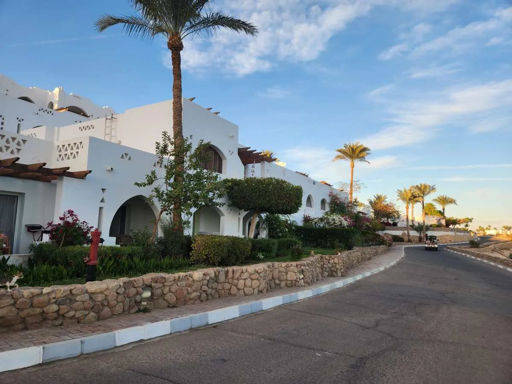
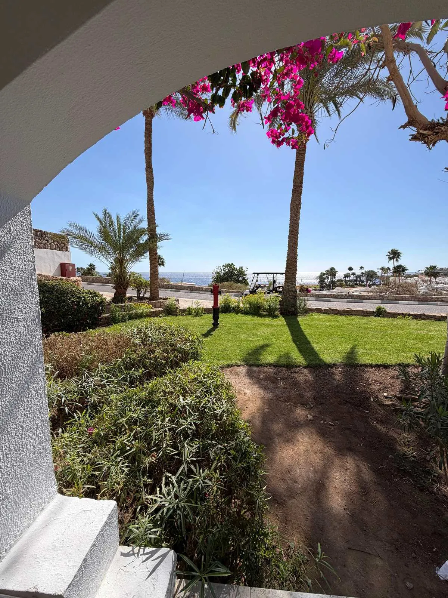

Sharm el Sheikh
Mare, deserto e sole quasi tutto l’anno: una guida essenziale alla città in cui ti ospitiamo.
Una perla del Mar Rosso
Sharm el Sheikh, in arabo «la baia dello sceicco», è una delle mete balneari più note del Mar Rosso. Si trova all'estremità meridionale della penisola del Sinai, dove il Golfo di Aqaba incontra il Mar Rosso.
Nata come piccolo villaggio di pescatori, tra gli anni Ottanta e Novanta è diventata una delle destinazioni più amate dagli italiani, grazie ai fondali corallini e a un clima soleggiato quasi tutto l'anno.

Il Mar Rosso e i suoi fondali
Il Mar Rosso è tra i migliori posti al mondo per snorkeling e immersioni. Il parco nazionale di Ras Mohammed, a sud della città, protegge alcune delle barriere coralline più ricche della regione.
L'acqua resta tiepida anche d'inverno e la visibilità è spesso eccellente: pesci pagliaccio, pesci palla, razze e tartarughe si vedono già facendo snorkeling dal reef.

Sole tutto l'anno
Sharm ha un clima desertico, con pochissime piogge. D'estate le temperature superano spesso i 35 °C; d'inverno le giornate restano miti, con massime intorno ai 20-25 °C e serate più fresche.
I mesi più piacevoli sono in primavera e in autunno. L'estate è calda ma il mare ripaga; d'inverno si scappa dal freddo e si resta a lungo.
Esperienze da non perdere

Ras Mohammed: come visitarlo da Sharm e dove fare snorkeling
Il parco nazionale sulla punta del Sinai si visita in barca o via terra, e le due gite sono molto diverse. Come scegliere, cosa portare e quali regole rispettare.

Tiran in barca: i reef di Jackson, Gordon, Thomas e Woodhouse
Le quattro barriere dello stretto di Tiran sono tra i punti più belli per lo snorkeling a Sharm e si vedono in giornata. Come funziona la gita e cosa aspettarsi.

Naama Bay: la passeggiata serale a dieci minuti da Coral Bay
Naama Bay è la baia più conosciuta di Sharm: spiaggia riparata, lungomare pedonale, negozi e vita serale. Come arrivarci da Coral Bay e cosa aspettarsi la sera.

Old Market di Sharm e la moschea Al Sahaba: guida alla visita
La Sharm vecchia è a una ventina di minuti da Coral Bay: mercato, spezie, la grande moschea Al Sahaba e la baia di Sharm El Maya. Come visitarla e come vestirsi.

Monte Sinai all'alba e monastero di Santa Caterina: cosa sapere
La salita notturna al Monte Sinai è una delle escursioni più richieste da Sharm. Distanze, fatica, freddo, regole e le avvertenze della Farnesina da leggere prima.

Dahab e il Blue Hole: la gita in giornata da Sharm el Sheikh
Dahab è a un'ora e mezza di strada da Coral Bay, con il Blue Hole poco più a nord. Cosa vedere in giornata e le cautele da conoscere prima di prenotare.
Scrivici in italiano
Per disponibilità, prezzi, transfer ed escursioni rispondiamo noi, di persona, di solito in pochi minuti su WhatsApp.